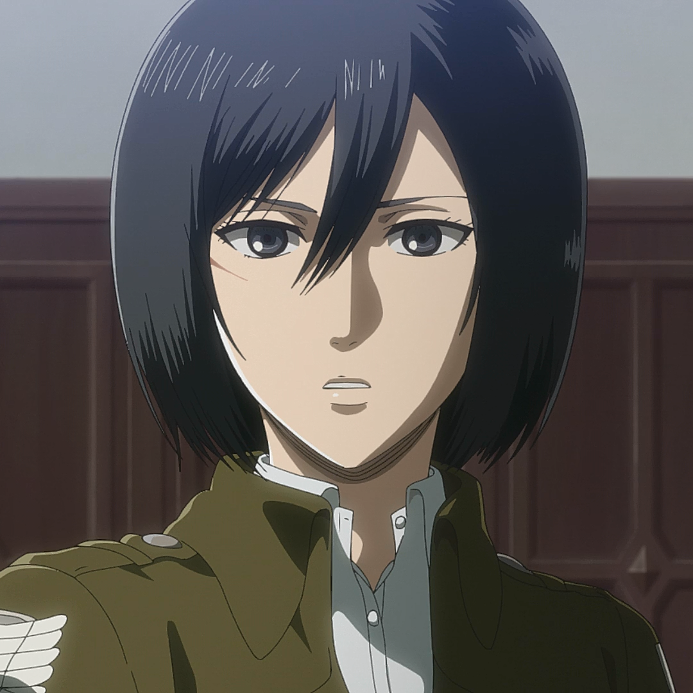

-
Accueil
L'attaque des Titans (Shingeki No Kyojin) a été écrit en 2009 par Hajime Isamaya. Une adaptation animée a été produite par Wit Studio et été diffusée pour la première fois en avril 2013, cette série anime est divisée en 3 saisons actuellement de 25 épisodes pour la première, 12 épisodes pour la deuxième et 22 épisodes pour la troisième et disponible légalement en France sur Wakanim.
Personnages


Episodes
- [ Saison 1 ] ------------------------------- [ Saison 2 ] ------------------------------- [ Saison 3 ] -
--[ Saison 4 ]--
-
Titre Original : 進撃の巨人
Genre : Action - Drame - Shônen - Surnaturel - Thriller
Écrit par : Hajime Isamaya
Produit par : Wit Studio (Saison 1/2/3), MAPPA (Saison 4)
Synopsis :
Il y a plus d’un siècle, les Hommes vivaient en paix. Mais, un jour l’Humanité a été presque entièrement décimée par des êtres gigantesques, les Titans. Personne ne sait d’où ils viennent ! Une chose est sûre, ils semblent animés par un unique but : dévorer les humains, un par un ! Depuis, les derniers rescapés ont bâti une place forte, une cité cernée de hautes murailles au sein de laquelle vivent leurs descendants. Ignorants tout du monde extérieur, ils se pensent au moins à l’abri des Titans ! Mais leurs vies basculent le jour où surgit un Titan colossal. Eren Jäger , le héros de ce manga, et sa sœur adoptive Mikasa Ackerman vont pourtant être témoin de la mort de leur mère lorsqu’un titan encore plus grand que les précédents apparaît pour détruire le mur....